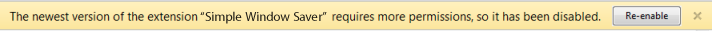

In a week or two, Simple Window Saver will be updated with a new feature: the ability to export your saved windows as a bookmark. You should see a yellow notice similar to this one:
Simply click "Re-enable" when you see this, and Simple Window Saver will start up again.
This feature will enable you to create a backup of your saved windows or transfer them to a different computer.
In order to create bookmarks, Simple Window Saver will need to request access to Google Chrome's 'bookmarks' permission. Chrome will temporarily disable Simple Window Saver after this update, and ask you to accept the new permissions.
If you miss the yellow bar, you can also re-enable Simple Window Saver manually. You can do so from Wrench Menu > Tools > Extensions, or re-install the extension from the gallery.
All your saved windows will be retained during this update, but it's possible that some open windows will no longer be recognized (this would happen if you change the windows while Simple Window Saver is disabled). If so, either close and re-open those windows, or simply re-save them.
It should go without saying that Simple Window Saver will not read or modify your bookmarks in any other way, and never sends any of your personal information to a server.
As always, I appreciate your feedback and your ratings. Thanks again for your support!
Cheers,
-Nick